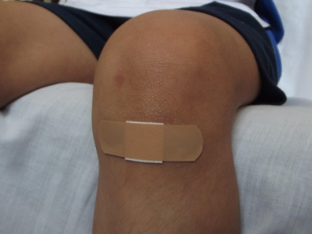

En estos casos tener las manos muy limpias es indispensable, para evitar el riesgo de infección. Luego, lavar la herida con abundante agua fresca puede resultar beneficioso.
Si hay mucho sangrado, se puede hacer presión con una o las dos manos para disminuirlo, colocando un vendaje limpio y húmedo sobre la cortada, para evitar que se pegue a la herida.